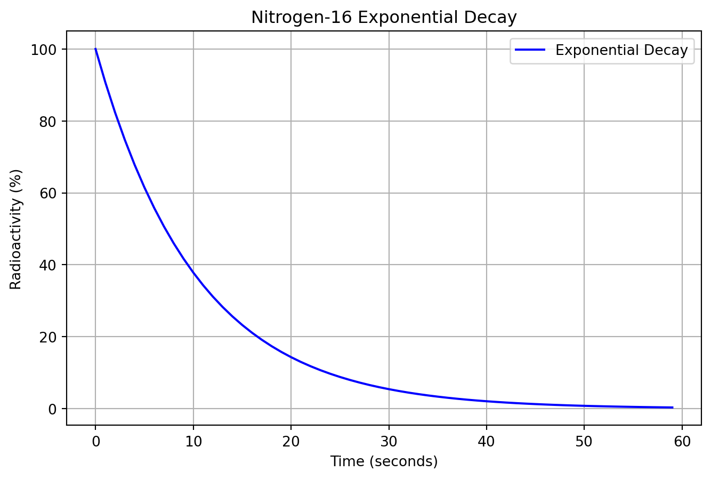
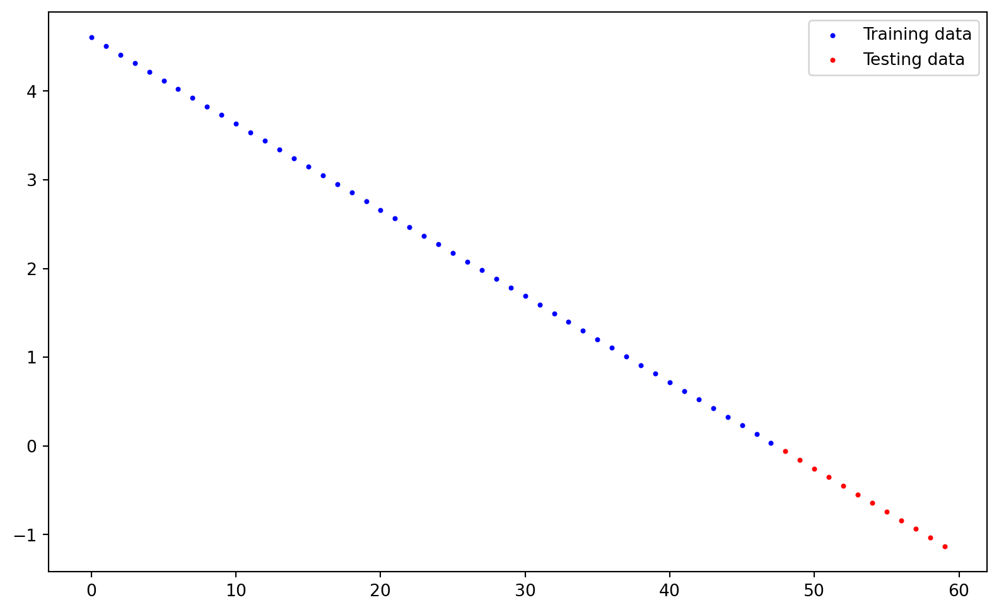
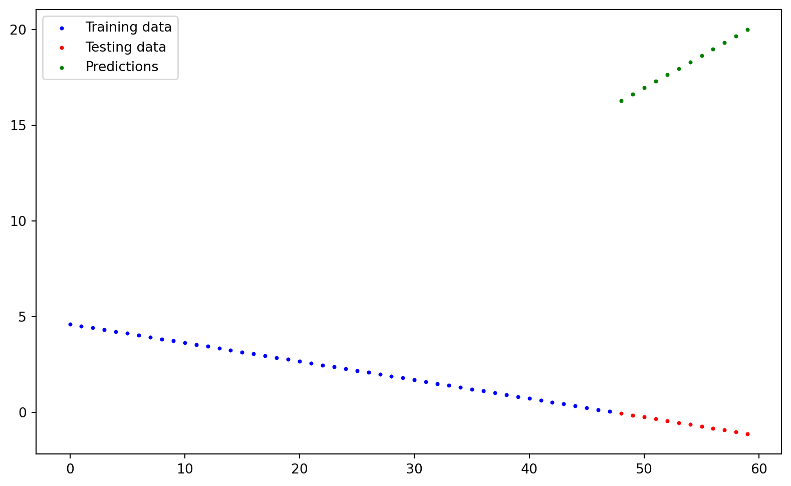
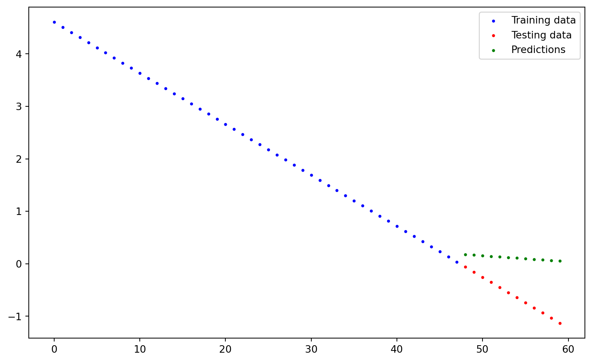

import torch
from torch import nn
import matplotlib.pyplot as pltLinear Regression and Nitrogen-16 Radioactive Decay
AI
Machine Learning
PyTorch
Physics
Introduction
Nitrogen-16 is a short-lived radioactive isotope that decays into Oxygen-16 through beta decay. It’s commonly found in nuclear reactors and has a half-life of 7.13 seconds.
Radioactive decay follows an exponential curve, but we can apply logarithmic transformation to make it linear so that we can use linear regression to work with the data.
The Formula
Exponential form: \(A(t) = A_0 \cdot e^{-\lambda t}\)
After applying natural logarithm: \(\ln(A) = \ln(A_0) - \lambda t\)
We now have a linear relationship to work with.

Let’s start with importing all the necessary libraries:
Translating the mathematical formula into Python code:
half_life = 7.13
decay_constant = torch.log(torch.tensor(2.0)) / half_life # λ = ln(2) / half-life (by definition)
time = torch.arange(0, 60, 1).unsqueeze(1) # let's pick a timeframe of 60 seconds
A0 = 100 # initial activity (100%)
radioactivity = A0 * torch.exp(-decay_constant * time) # exponential form
log_radio = torch.log(radioactivity) # linear form (applied .log)Generating Data
We have to split our data into training and testing sets: 80% for training and 20% for testing:
train_split = int(0.8 * len(time)) # we'll use 80% of data for training
X_train, y_train = time[:train_split], log_radio[:train_split]
X_test, y_test = time[train_split:], log_radio[train_split:]
# first 48s of data to train, last 12s of data to test
len(X_train), len(y_train), len(X_test), len(y_test)(48, 48, 12, 12)Creating a plotting function
Let’s create now a function that can plot on a graph all the data we are dealing with:
def plotting_fn(train_data = X_train,
train_labels = y_train,
test_data = X_test,
test_labels = y_test,
predictions = None):
plt.figure(figsize=(10, 6))
plt.scatter(train_data, train_labels, c = "b", s = 4, label = "Training data")
plt.scatter(test_data, test_labels, c = "r", s = 4, label = "Testing data")
if predictions is not None:
plt.scatter(test_data, predictions, c = "g", s = 4, label = "Predictions")
plt.legend(prop={"size": 10});Let’s see what the data look like:
plotting_fn();
Creating a Linear Regression Model
We now have to create our model. Let’s start with defining a class model:
class LinearRegressionModel(nn.Module): # All PyTorch models are a subclass of nn.Module
def __init__(self):
super().__init__()
self.weights = nn.Parameter(torch.randn(1, dtype = torch.float),
requires_grad = True)
self.bias = nn.Parameter(torch.randn(1, dtype = torch.float),
requires_grad = True)
# nn.Parameter transforms "regular tensors" into "parameter tensors" so that
# they can be tracked and updated
def forward(self, x):
return self.weights * x + self.bias
# the forward function defines what the model actually does, in this case it makes
# predictions using our formula y = (weights * x + bias)We have created a class, now let’s make a model out of it… let’s call it Model_V0.
Initializing the model
RANDOM_SEED = 42 # makes randomness less "random" (we can replicate the same
# randomness over and over again)
torch.manual_seed(RANDOM_SEED)
Model_V0 = LinearRegressionModel()
list(Model_V0.parameters())
# the model parameters (weight and bias) are now just random numbers,
# that's because we've just created it and it has not been trained yet[Parameter containing:
tensor([0.3367], requires_grad=True),
Parameter containing:
tensor([0.1288], requires_grad=True)]Starting point
Let’s look at the predictions of the untrained model:
with torch.inference_mode():
y_preds = Model_V0(X_test)
y_predstensor([[16.2899],
[16.6266],
[16.9633],
[17.3000],
[17.6367],
[17.9734],
[18.3101],
[18.6468],
[18.9835],
[19.3202],
[19.6569],
[19.9935]])plotting_fn(predictions = y_preds)
Creating the Loss Function and Optimizer
loss_fn = nn.L1Loss() # calculates how bad the predictions are (L1Loss() uses Mean Absolute Error(MAE)) and calculates gradients
optimizer = torch.optim.SGD(params = Model_V0.parameters(), lr = 0.01) # updates model's parameters based on SGDTraining
torch.manual_seed(RANDOM_SEED)
epochs = 200
for epoch in range(epochs):
Model_V0.train() # set the model in training mode
y_pred = Model_V0(X_train) # training predictions
loss = loss_fn(y_pred, y_train) # calculates the loss function in training
optimizer.zero_grad() # resets gradients to zero
loss.backward() # calculates the gradients of loss function with respect to each parameter
optimizer.step() # updates the parameters based on gradients
Model_V0.eval() # evaluation mode
with torch.inference_mode():
test_pred = Model_V0(X_test)
test_loss = loss_fn(test_pred, y_test.type(torch.float))
if epoch % 20 == 0:
print(f"Epoch: {epoch} | Test Loss: {test_loss:.3f}")Epoch: 0 | Test Loss: 7.386
Epoch: 20 | Test Loss: 6.356
Epoch: 40 | Test Loss: 4.967
Epoch: 60 | Test Loss: 7.060
Epoch: 80 | Test Loss: 7.142
Epoch: 100 | Test Loss: 6.242
Epoch: 120 | Test Loss: 6.992
Epoch: 140 | Test Loss: 3.463
Epoch: 160 | Test Loss: 9.437
Epoch: 180 | Test Loss: 5.545Testing
Model_V0.eval()
with torch.inference_mode():
final_pred = Model_V0(X_test)
final_predtensor([[0.1774],
[0.1662],
[0.1550],
[0.1438],
[0.1325],
[0.1213],
[0.1101],
[0.0989],
[0.0876],
[0.0764],
[0.0652],
[0.0539]])Plotting final results
Let’s see what the final predictions are after training:
plotting_fn(predictions = final_pred)
Conclusion
In this experiment, we successfully modeled the radioactive decay of Nitrogen-16 using linear regression. By applying a logarithmic transformation, we converted the exponential decay into a linear relationship, allowing us to predict future values using a simple model.
While the model shows reasonable performance, we observed some fluctuations in the loss function (likely due to the logarithmic transformation). This suggests potential improvements.
Links
License
MIT License
MIT License
Copyright (c) 2021 Daniel Bourke
Permission is hereby granted, free of charge, to any person obtaining a copy of this software and associated documentation files (the “Software”), to deal in the Software without restriction, including without limitation the rights to use, copy, modify, merge, publish, distribute, sublicense, and/or sell copies of the Software, and to permit persons to whom the Software is furnished to do so, subject to the following conditions:
The above copyright notice and this permission notice shall be included in all copies or substantial portions of the Software.
THE SOFTWARE IS PROVIDED “AS IS”, WITHOUT WARRANTY OF ANY KIND, EXPRESS OR IMPLIED, INCLUDING BUT NOT LIMITED TO THE WARRANTIES OF MERCHANTABILITY, FITNESS FOR A PARTICULAR PURPOSE AND NONINFRINGEMENT. IN NO EVENT SHALL THE AUTHORS OR COPYRIGHT HOLDERS BE LIABLE FOR ANY CLAIM, DAMAGES OR OTHER LIABILITY, WHETHER IN AN ACTION OF CONTRACT, TORT OR OTHERWISE, ARISING FROM, OUT OF OR IN CONNECTION WITH THE SOFTWARE OR THE USE OR OTHER DEALINGS IN THE SOFTWARE.